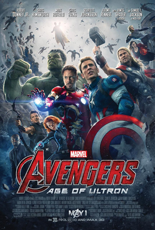

Favourite Movies
Avengers - Age of Ultron 
Genre: Action/Adventure/Sci-Fi
Release Date: 23 April 2015
Description: Avengers: Age of Ultron is a 2015 American superhero film based on the Marvel Comics superhero team the Avengers, produced by Marvel Studios and distributed by Walt Disney Studios Motion Pictures. It is the sequel to 2012's The Avengers and the eleventh film in the Marvel Cinematic Universe (MCU). The film was written and directed by Joss Whedon and features an ensemble cast that includes Robert Downey Jr., Chris Hemsworth, Mark Ruffalo, Chris Evans, Scarlett Johansson, Jeremy Renner, Don Cheadle, Aaron Taylor-Johnson, Elizabeth Olsen, Paul Bettany, Cobie Smulders, Anthony Mackie, Hayley Atwell, Idris Elba, Stellan Skarsgård, James Spader, and Samuel L. Jackson. In Avengers: Age of Ultron, the Avengers fight Ultron, an artificial intelligence obsessed with causing human extinction. The sequel was announced in May 2012, after the successful release of The Avengers. Whedon, the director of the first film, was brought back on board in August and a release date was set. By April 2013, Whedon had completed a draft of the script, and casting began in June with the re-signing of Downey. Second unit filming began in February 2014 in South Africa with principal photography taking place between March and August 2014. The film was primarily shot at Shepperton Studios in Surrey, England, with additional footage filmed in Italy, South Korea, Bangladesh, New York City, and various locations around England. While in post production, the film was converted to 3D and over 3,000 visual effects shots were added. Avengers: Age of Ultron premiered in Los Angeles on April 13, 2015, and was released on May 1, 2015, in North America, in 3D and IMAX 3D. The film received positive reviews from critics and grossed over $1.4 billion worldwide, making it the seventh-highest-grossing film in history and the fourth-highest-grossing film of 2015. A sequel, Avengers: Infinity War, is scheduled to be released on May 4, 2018, and another untitled sequel is scheduled for May 3, 2019.
Storyline: concludes on an interesting note, one that moves the team’s heroes into new places and new directions as it lays the groundwork for the next phase of the Marvel Cinematic Universe.By the end of the film, Earth’s Mightiest heroes have defeated Ultron and recruited some new super-powered beings along the way, but not without a great cost. After all, it was the Avengers who created the danger this time and all of the death and destruction resulting from that, is on them.As for what’s next, the heroes as we knew them are on new journeys and the Avengers have once again taken a new form with a new objective and new base of operations.
Relevant movies: The Avengers Avengers - Infinity War
Captain America - Civil War
Genre: Action/Adventure/Sci-Fi
Release Date: 5 May 2016
Description: 2016 American superhero film based on the Marvel Comics character Captain America, produced by Marvel Studios and distributed by Walt Disney Studios Motion Pictures. It is the sequel to 2011's Captain America: The First Avenger and 2014's Captain America: The Winter Soldier, and the thirteenth film of the Marvel Cinematic Universe (MCU). The film is directed by Anthony and Joe Russo, with a screenplay by Christopher Markus and Stephen McFeely, and features an ensemble cast, including Chris Evans, Robert Downey Jr., Scarlett Johansson, Sebastian Stan, Anthony Mackie, Don Cheadle, Jeremy Renner, Chadwick Boseman, Paul Bettany, Elizabeth Olsen, Paul Rudd, Emily VanCamp, Tom Holland, Frank Grillo, William Hurt, and Daniel Brühl. In Captain America: Civil War, disagreement over international oversight of the Avengers fractures them into opposing factions—one led by Steve Rogers and the other by Tony Stark. Development of Civil War began in late 2013 when Markus and McFeely began writing the screenplay, which borrows concepts from the 2006 comic book storyline "Civil War", while also focusing on story and character elements from the previous Captain America films to conclude the trilogy. Following positive reactions to test screenings of The Winter Soldier, the Russo brothers were brought back to direct in early 2014. The film's title and premise were revealed in October 2014, along with Downey's casting; additional cast members joined in the following months. Principal photography began in April 2015 at Pinewood Atlanta Studios in Fayette County, Georgia, and continued in the Metro Atlanta area before concluding in Germany in August 2015, with the film being the first to use IMAX's digital 2D cameras (for the film's central airport fight sequence). Visual effects were provided by nearly 20 different studios during the post-production process.
Storyline: With many people fearing the actions of super heroes, the government decides to push for the Hero Registration Act, a law that limits a hero's actions. This results in a division in The Avengers. Iron Man stands with this Act, claiming that their actions must be kept in check otherwise cities will continue to be destroyed, but Captain America feels that saving the world is daring enough and that they cannot rely on the government to protect the world. This escalates into an all-out war between Team Iron Man (Iron Man, Black Panther, Vision, Black Widow, War Machine, and Spider-Man) and Team Captain America (Captain America, Bucky Barnes, Falcon, Scarlet Witch, Hawkeye, and Ant Man) while a new villain emerges.
Relevant movies: Captain America - The First Avenger Captain America - Winter Soldier
Transformers - The Last Knight
Genre: Action/Adventure/Sci-Fi
Release Date: 22 June 2017
Description: Transformers: The Last Knight is a 2017 American science fiction action film based on the Transformers toy line created by Hasbro. It is the fifth installment of the live-action Transformers film series, the second film in the sequel trilogy and the sequel to 2014's Transformers: Age of Extinction. Like its predecessors, the film is directed by Michael Bay, featuring Mark Wahlberg returning from Age of Extinction, with Josh Duhamel, John Turturro, and Glenn Morshower all reprising their roles from the first three films, with Laura Haddock and Anthony Hopkins both joining the cast. Bay and Wahlberg have stated they will not return for another sequel.[10] The film premiered at Odeon Leicester Square in London on June 18, 2017, and was theatrically released in the United States on June 21, 2017, by Paramount Pictures in 2D, 3D, and IMAX 3D. Like its predecessors, the film received negative to mixed reviews from critics and, with an approval rating of 15% on Rotten Tomatoes, it is the worst-reviewed film of the series. Audiences alike had mixed reviews. It also finished with a worldwide gross of $605 million, making it the lowest of the franchise.
Storyline: Optimus Prime return to Cybertron to find the planet dead, and learns he’s the one to blame for it. To bring it back to life he’ll need a mysterious artifact that – we hope you’re sitting down – is on Earth. The artifact is connected to Merlin, the sorcerer mentor to King Arthur in the legendary story. Merlin gained his magic through a visiting Transformer, not the first time the race has dabbled in altering human history (the site speculates that the artifact could be the mythical sword Excalibur, hence a sword featured in the film’s key art). The film picks up where the previous movie left off, with Optimus Prime in space; Optimus is the main Transformers character, however Bumblebee will take a bigger role while Optimus (presumably) seeks out Cybertron, along with Hound, Crosshairs, Drift, the Dinobots and “mini-dinobots” operating out of the South Dakota badlands.
Relevant movies: Transformers Transformers - Revenge of the Fallen Transformers - Dark of the Moon Transformers - Age of Extinction
Iron Man 3

Genre: Action/Adventure/Sci-Fi
Release Date: 2 May 2013
Description: Iron Man 3 (stylized onscreen as Iron Man Three) is a 2013 American[4] superhero film based on the Marvel Comics character Iron Man, produced by Marvel Studios and distributed by Walt Disney Studios Motion Pictures.1 It is the sequel to 2008's Iron Man and 2010's Iron Man 2, and the seventh film in the Marvel Cinematic Universe. Shane Black directed a screenplay he co-wrote with Drew Pearce, which uses concepts from the "Extremis" story arc by Warren Ellis. The film stars Robert Downey Jr., Gwyneth Paltrow, Don Cheadle, Guy Pearce, Rebecca Hall, Stephanie Szostak, James Badge Dale, Jon Favreau, and Ben Kingsley. In Iron Man 3, Tony Stark deals with posttraumatic stress disorder caused by the events of The Avengers, while investigating the reemergence of the Ten Rings, led by the mysterious Mandarin and comes into a conflict with an old enemy: Aldrich Killian. After the release of Iron Man 2 in May 2010, Favreau, who served as director, decided not to return, and in February 2011 Black was hired to write and direct the film. Black and Pearce opted to make the script more character-centric and focused on thriller elements. Throughout April and May 2012, the film's supporting cast was filled out, with Kingsley, Pearce, and Hall brought in to portray key roles. Filming began on May 23, and lasted through December 17, 2012, primarily at EUE/Screen Gems Studios in Wilmington, North Carolina. Additional shooting took place at various locations around North Carolina, as well as Florida, China, and Los Angeles. The visual effects were handled by 17 companies, including Scanline VFX, Digital Domain, and Weta Digital. The film was converted to 3D in post-production.
Storyline: Marvel's "Iron Man 3" pits brash-but-brilliant industrialist Tony Stark/Iron Man against an enemy whose reach knows no bounds. When Stark finds his personal world destroyed at his enemy's hands, he embarks on a harrowing quest to find those responsible. This journey, at every turn, will test his mettle. With his back against the wall, Stark is left to survive by his own devices, relying on his ingenuity and instincts to protect those closest to him. As he fights his way back, Stark discovers the answer to the question that has secretly haunted him: does the man make the suit or does the suit make the man?
Relevant movies: Iron Man Iron Man 2
War for The Planet of The Apes (2017)
Genre: Action/Adventure/Sci-Fi/Drama/Thriller
Release Date: 13 July 2017
Description: War for the Planet of the Apes is a 2017 American science fiction film directed by Matt Reeves and written by Mark Bomback and Reeves. A sequel to Rise of the Planet of the Apes (2011) and Dawn of the Planet of the Apes (2014), it is the third installment in the Planet of the Apes reboot series. The film stars Andy Serkis, Woody Harrelson and Steve Zahn, and follows a confrontation between the apes, led by Caesar, and the humans for control of Earth. Like its predecessor, its premise shares several similarities to the fifth film in the original series, Battle for the Planet of the Apes, but it is not a direct remake.Principal photography began on October 14, 2015, in Vancouver. War for the Planet of the Apes premiered in New York City on July 10, 2017, and was theatrically released in the United States on July 14, 2017, by 20th Century Fox.[6] The film has grossed over $490 million and received critical praise, with many reviewers highlighting the acting (particularly Serkis), visual effects, story, musical score and direction. Two years after the U.S. military was called to fight off an increasingly intelligent and dangerous tribe of apes, starting a devastating war between the two species, the apes' clan, led by the chimpanzee Caesar, are attacked in the woods by a rogue paramilitary faction known as Alpha-Omega, led by a mysterious Colonel. Alpha-Omega has in its service apes (called "donkeys") that had previously followed Koba, a maniacal, human-hating bonobo who led a failed coup against Caesar and started the war after leading a vengeful attack against human survivors in San Francisco. During Alpha-Omega's attack, the human soldiers are met by heavy ape resistance. Four soldiers and a "donkey" gorilla named Red are captured by the apes. Caesar arrives and releases the human soldiers, telling them to deliver a message to the Colonel - that he killed Koba for starting the war and that he desires peace between the humans and apes. Caesar then orders that Red is to be imprisoned but Red escapes, injuring albino gorilla Winter.
Storyline: Caesar and his apes are forced into a deadly conflict with an army of humans led by a ruthless Colonel. After the apes suffer unimaginable losses, Caesar wrestles with his darker instincts and begins his own mythic quest to avenge his kind. As the journey finally brings them face to face, Caesar and the Colonel are pitted against each other in an epic battle that will determine the fate of both their species and the future of the planet.
Relevant movies: War for The Planet of The Apes (2011)